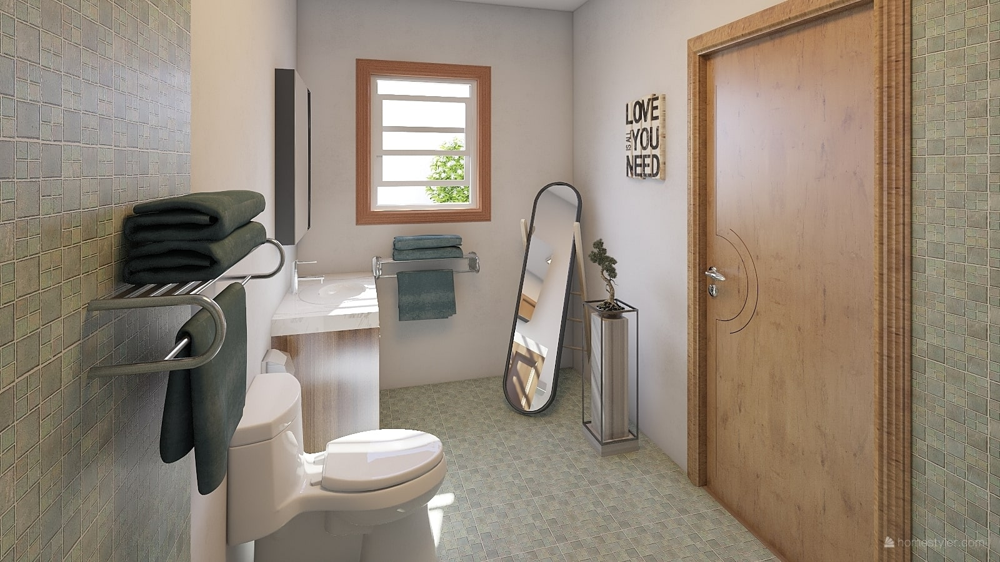
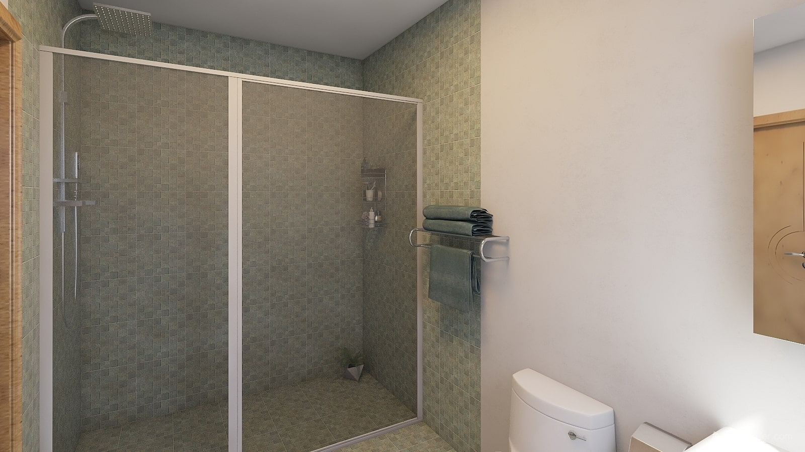
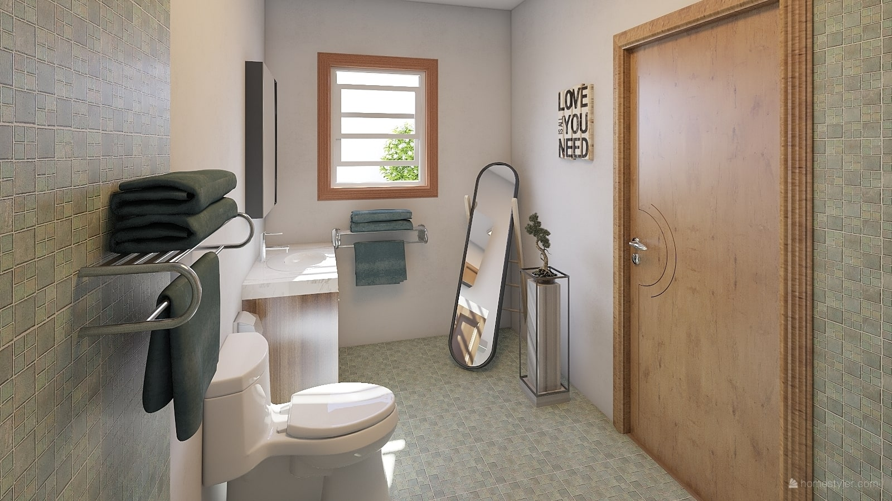
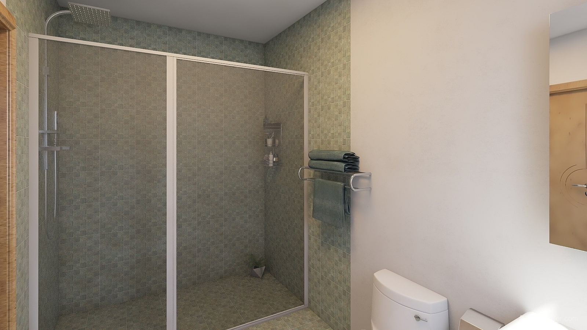

Intro

Oferim assessorament orientat a equips de menjador d’escoles públiques o privades i projectes de lleure que vulguin apropar-se o aprofundir en un acompanyament respectuós cap als infants, les famílies i el propi equip.
Kun Koro significa “amb cor” en Esperanto. Per a nosaltres representa acompanyar des del cor, des d’un lloc sentit, des de les necessitats dels infants, el vincle i l’afecte.
Treballem des de fa anys a la franja de migdia de l’escola pública viva i activa Congrés-Indians. Quan l’escola va obrir les seves portes, tot oferint un acompanyament amorós i respectuós cap a les necessitats dels infants en un entorn escola públic, es va posar de manifest també la necessitat de cuidar les franges no lectives, com el migdia. Això va significar reflexionar sobre algunes situacions normalitzades a la majoria de menjadors escolars com ara obligar a menjar certes quantitats o aliments, haver de fer la migdiada, premiar o castigar certs comportaments, menjar tots junts en un gran menjador, etc.
A poc a poc van anar forjant un projecte de migdia més respectuós amb les necessitats i ritmes dels infants, que està en constant evolució. La nostra experiència i aprenentatge ens ha permès desenvolupar una capacitat d’observació i una metodologia que creiem que pot ser d’interès per a d’altres projectes que es plantegin un acompanyament més respectuós.

Treballem amb
· Senda. Centre d’Acompanyament a la Infancia y la Familia.
· Del Campo al Cole. Entitat lider en Espanya en la promoció de l'alimentació escolar sostenible i saludable.
Projectes als quals hem acompanyat:
· Escola 30 Passos · Escola pública d’Infantil i Primària.
· Escola Tanit · Escola pública d’Infantil i Primària.
· Ca La Rosa · Menjador d’Infantil, Primària i Secundària.
Hem col·laborat amb:
· CAIEV · Centre d'Assessorament i Investigació d'Educació Viva.
· L'Escoleta dels Indians · Projecte pre-escolar.
Assessorament
Oferim acompanyament orientat a equips de menjador d’escoles públiques o privades i projectes de lleure que vulguin apropar-se o aprofundir en un acompanyament respectuós cap als infants, les famílies i el propi equip.
Treballem sobre les necessitats de cada projecte i els seus interessos, tot oferint observació, reflexions, experiències i propostes concretes per a cada projecte educatiu i de menjador. Acompanyem els projectes per a que intentin cobrir més les necessitats dels infants.
Dividim el contingut en tres apartats bàsics:

· Acompanyament emocional i actituds de l'adult acompanyant
Observem possibles millores i mancances en com ens relacionem amb l'entorn i les criatures com a adults acompanyants durant els àpats i al llarg de la franja de migdia. Oferim formació, reflexions i experiències per a treballar en aquest sentit.

· Logística al servei de les necessitats dels infants
Estudiem la logística del projecte interessat i detectem possibles canvis logístics que repercuteixin positivament en les criatures. Espais, materials o propostes disponibles, temps d'espera curts, quants adults hi ha a l'espai i com se situen, són algunes de les qüestions més evidents. No obstant això, també indirectament es pot beneficiar els infants des de la logística, per mitjà d'aconseguir més benestar en els acompanyants, famílies, mestres i companys. En relació a aquestes qüestions, aportem la nostra experiència i elaborem propostes de millora a nivell logístic en funció d’allò que hem observat i les necessitats i demandes del projecte interessat.

· Espais i materials. Mitjans per a la relació
Aportem la nostra experiència pel que fa a la disposició dels espais, el seu ús i els seus materials per a que, en conjunt amb la logística i l'acompanyament, configurin una franja de migdia el més agradable, respectuosa i rica possible per a les criatures i també els adults.
Si vols sol·licitar un assessorament o que t’afegim a la nostra llista de difusió, escriu-nos a: info@kunkoro.kiwi

"Moltíssimes gràcies per compartir aquests dies amb nosaltres. Ha estat un regal tenir-vos i que ens acompanyéssiu una miqueta en aquest camí que anem fent. El dossier final em sembla preciós. Molt útil i especialment interessant tenir una cosa física on quedi recollit una mica el que hem viscut aquests dies." Tanit Solana. Escola 30 Passos.
El Club Kun Koro
 Malgrat que el text està escrit en temps present, aquest és un projecte sense inaugurar i en construcció i, per tant, tota la informació sobre El Club és en aquest moment orientativa. Sempre que sigui econòmicament sostenible i logísticament possible, tractarem d’ajustar-nos a aquesta proposta de projecte. Tot està subjecte a modificacions.
Les imatges són renders fets per ordinador. No representa un espai real i la seva funció és orientar i transmetre una idea general sobre el tipus d’espai que proposem.
Malgrat que el text està escrit en temps present, aquest és un projecte sense inaugurar i en construcció i, per tant, tota la informació sobre El Club és en aquest moment orientativa. Sempre que sigui econòmicament sostenible i logísticament possible, tractarem d’ajustar-nos a aquesta proposta de projecte. Tot està subjecte a modificacions.
Les imatges són renders fets per ordinador. No representa un espai real i la seva funció és orientar i transmetre una idea general sobre el tipus d’espai que proposem.

· Què és El Club Kun Koro?
És un centre al barri de La Sagrera de Barcelona, acompanyat per adults, per a adolescents i preadolescents en horari de migdia i tarda, que sorgeix per a donar resposta a la necessitat que tenen les noies i nois adolescents de disposar d’un espai propi fora de casa en el qual poder relacionar-se amb els seus amics i amigues, fer els deures, estudiar plegats, realitzar activitats o tallers, jugar, descansar, etc. Es tracta, per exemple, d’un lloc alternatiu al parc, per quan ja deixa d’interessar-los, o bé per quan la logística familiar no permet que es reuneixin amb amigues i amics a casa, per quan la família no està disponible a la tarda o per quan necessiten obrir-se al món més enllà del que pot oferir el nucli familiar.
Considerem molt important el fet de disposar de moments de calma en el dia a dia en els quals pugui florir allò que més ens nodreix en les relacions i en els nostres interessos, aprenentatges, coneixements dels altres i autoconeixement. En definitiva, moments importants per al desenvolupament personal. A El Club Kun Koro cuidem aquests moments, que sovint necessitem per a poder prendre consciència de les nostres necessitats i buscar la seva satisfacció, i els acompanyem des d'un profund respecte, generant una relació de confiança amb les noies i nois de El Club.
Valorem molt la convivència dels adolescents entre els iguals i amb els adults acompanyants de l'espai com a via d'aprenentatge i gaudi. Busquem sempre que l'espai i l'acompanyament s'adapti a les necessitats de cada persona i cada moment.

· Per què oferim aquest espai?
Creiem que és summament important i delicada aquesta franja d’edat i observem una falta d'espais que ofereixin facilitats als adolescents per a cursar els seus processos i que atenguin realment les seves necessitats. Aportem una visió profunda sobre l'adolescència i un acompanyament involucrat, respectuós i amb la mirada posada que l'adolescència sigui plaent i interessant per als nois i noies.
Els adults acompanyants, amb experiència en acompanyament respectuós i amb un coneixement ampli sobre les necessitats dels adolescents, ofereixen un marc de seguretat per a la comunicació -essencial en aquesta edat- i la complicitat amb adults que també els puguin cuidar quan necessiten tenir moments i espais fora de la família.
· Una segona casa
Considerem essencial que l'espai sigui d'ús prioritari per als adolescents de El Club, evitant així haver d'usar espais polivalents que muntar i desmuntar, on no es pot deixar petjada ni alterar l'espai. Prioritzar aquest ús permet que els adolescents el sentin seu i que els processos de presa de decisions sobre normes, espais, activitats o materials siguin més consistents i es puguin acompanyar des d'un lloc més cuidat usant sistemes més inclusius de gestió de grups.

· Acompanyament
Donar un temps i un espai cuidats a les noies i nois amb una ràtio reduïda i un acompanyament respectuós facilita que puguin sentir la seva independència -tan desitjada i necessària per la seva etapa evolutiva-.
El Club posa a la disposició de les noies i nois materials, eines, coneixements, contactes, activitats, espais i l'acompanyament adult necessari perquè puguin desenvolupar els seus propis interessos, descobrir nous horitzons, provar, experimentar, investigar, reflexionar, discutir, descansar, relaxar-se, estudiar, fer deures, crear projectes diversos, etc.
En general, les dinàmiques del Club tenen a veure amb les necessitats individuals i grupals i els conflictes que van sorgint. Es dóna espai per a reflexionar, negociar i arribar a acords, col·laborar i compartir, per exemple, noves tècniques d'estudi, eines per a diferents contextos de vida, solucions particulars a problemes diversos, etc.
Acompanyem les noies i nois perquè puguin desenvolupar els seus propis recursos en matèria de responsabilitats, autonomia i normes i estem presents per a gestionar l'eventual contrast entre la realitat que no satisfà i les seves necessitats o desitjos. Els acompanyem a desenvolupar la percepció de les necessitats pròpies i les de l'entorn, generar espais de diàleg i expressió, escolta, joc, esperit crític, compartir tasques logístiques i sentir el temps amb llibertat.
També valorem molt que disposin de moments en companyia de qualitat i consistència. És important que puguin arribar a desenvolupar relacions entre iguals fluides i concordes al seu moment i que també puguin tenir relacions consistents amb adults que sentin pròxims i en qui puguin confiar -a més de la família-, que els deixin el seu espai però que estiguin realment disponibles per al que necessitin.

En totes dues relacions (entre iguals i amb adults) volem fomentar la comunicació i la confiança perquè es puguin sentir tranquils demanant ajuda amb el que necessitin, compartint mètodes d'estudi, parlant sobre les relacions de cadascun, sobre preocupacions o alegries, desenvolupant en grup idees i projectes, parlant i reflexionant sobre qüestions que els interessin, etc. D'aquesta manera, els adults del centre acompanyem a cada noi i noia tant en les relacions amb els altres i amb si mateix, com en els aprenentatges i interessos propis i dels altres.
El recorregut que es fa a El Club Kun Koro és un camí de vida sense la pressió de deixar enrere etapes anteriors ni l'exigència de complir uns requisits per a les noves etapes. Una experiència única i diferent per a cada noia i noi, que cuidem adaptant-nos de forma fluida segons la persona, el seu moment i la seva situació. Observem i reflexionem sobre el grup i cada noi i noia, i creixem com a grup de forma natural, gaudint del camí compartit, juntes i junts.
Oferim també un marc segur per a les famílies. En una primera entrevista, tractem totes les possibles preocupacions i peculiaritats de cada cas, i establim acords conjunts segons el parer i sentir de la família i el nostre, en relació al seu fill o filla i les seves activitats i usos a El Club, així com matisos del nostre acompanyament com a adults del centre.
Considerem vital el treball triangular entre les noies i nois, els adults de El Club i la família, motiu pel qual a vegades convoquem a les famílies, així com elles ens poden demanar reunions sempre que ho necessitin. Tenim per objectiu realitzar un acompanyament coherent que no estigui al marge de la família i que pugui oferir més seguretat i profunditat als nois i noies.
A més de l'acompanyament en el centre, també oferim serveis de cangur i d'acompanyament als nois i noies quan es desplacen a peu pel carrer fins a altres espais.
A continuació us recomanem alguns articles i escrits que estan relacionats amb l'adolescència i el propòsit d'aquest espai.
La Edad OlvidadaBegoña González Minguillón, 2019. Coordinadora de l'escola viva El Roure. "Creo que es una responsabilidad pendiente generar espacios abiertos para adolescentes [...] donde se pueda dar la escucha que necesitan y reclaman, siendo protagonistas de sus propios procesos de aprendizaje y maduración, siguiendo su propio ritmo y manera, sin ser juzgados por sus tentativas de búsqueda".
Nuevos Espacios Para La AdolescenciaJosé Contreras Domingo, 2019. Professor titular del Departament de Didàctica i Organització Educativa de la Universitat de Barcelona. Remei Arnaus Morral, 2019. Professora jubilada del Departament de Didàctica i Organització Educativa de la Universitat de Barcelona. "Entendemos que lo importante es un espacio en el que puedan tener el tiempo, el sosiego respecto a las presiones exteriores, las relaciones y las reflexiones para descubrirse, para reconocer y clarificar sus deseos, y para explorar quienes son, quienes quieren ser y qué caminos quieren probar para ir encontrando su sentido de sí y su dirección en la vida".

· Espacios, materiales y actividades
La gestió d'un espai com El Club Kun Koro és molt complexa per la varietat d'activitats i necessitats i per això proposem recursos diversos. Des de la nostra experiència i amb la formació contínua que efectuem, sentim que és important oferir un entorn favorable per al desenvolupament integral de les nois i nois, un entorn en qual puguin satisfer les seves necessitats evolutives i desenvolupar habilitats de tot tipus. A El Club acompanyem situacions reals, aprenent a adaptar-nos i reinventar-nos tal com és necessari en la vida quotidiana canviant, en els treballs, a l'escola i en tots els àmbits de tipus socioeducatiu.
La composició dels espais està dissenyada per a satisfer múltiples necessitats: per a poques persones o moltes alhora, per a diversos tipus d'activitats alhora sense que unes destorbin a les altres, i per a les mateixes activitats realitzades de diferents maneres en diferents espais.
L'espai està replet de possibilitats gràcies als múltiples sofàs, catifes, tamborets, butaques, taules baixes i altes, cadires, pufs, coixins, hamaques, etc. Això permet múltiples usos del mobiliari i possibilitats de transformació de l'espai. Així, per exemple, es pot llegir, estudiar, fer deures, escriure o xerrar i reflexionar en qualsevol lloc i com a cadascú li surti. El tipus de mobiliari fomenta la relació però, alhora, no impossibilita l'aïllament que a vegades poden necessitar.
Disposem de llibres, jocs, material bàsic d'oficina d'estudi i treball, dispositius portàtils amb internet, alguns instruments musicals, etc. També disposem d'altres materials que són un reflex dels interessos de les noies i nois de El Club a cada moment. Això pretén facilitar la conquesta de coneixements que els inquietin, ja sigui a través de petites consultes al seu abast o grans projectes.

· Llista de subespais i el seu sentit
- Espai per a proposar idees i prendre decisions en grup: on demanar material, proposar projectes a realitzar i prendre decisions. Fem servir eines de facilitació de grup per a la indagació de les diverses veus i sentirs col·lectius, així com per a la presa de decisions grupals, que tinguin en compte a totes les persones, no només a les majories. Aquest lloc també apropa la possibilitat d'aventurar-se en temes desconeguts, veient els interessos dels altres a partir de les seves proposicions.
- Biblioteca: on descobrir una selecció de coneixements variats de qualitat a través de llibres, revistes, documentals, pel·lícules, música, jocs de taula i videojocs seleccionats i interessants.
- Espai tranquil: un lloc que estarà disponible sempre que algú el necessiti i on es garanteix un ambient calmat.
- Jardí: l'espai s'estén a l'exterior seguint el mateix estil de materials, mobles i usos de l'espai. El nostre trosset d'aire lliure, sol, aigua, plantes i cel.
- Barra de tes: per a poder prendre infusions, tes, aperitius, menjar al migdia o fins i tot sopar portant menjar de casa, de fora o d’algun servei d'àpats. Nevera i utensilis diversos.
- Armaris i penja-robes: emmagatzematge per a motxilles, patinets, abrics, etc.
- Lavabo amb dutxa: disponible per a poder-se dutxar a El Club.

· Propostes i tallers
Les propostes i els tallers sorgeixen d'observacions dels adults acompanyants i famílies o dels interessos dels nois i noies de El Club.
Els adults acompanyants observen i des d'aquí proposen activitats específiques en moments concrets. Les noies i nois poden interessar-se o no per aquestes propostes lliurement. D'aquesta manera, les propostes formen part de l'activitat fluida de l'espai, a diferència dels tallers.
Algunes propostes poden ser compondre cançons, dissenyar i confeccionar roba, visionar pel·lícules o documentals amb tertúlia posterior, xerrar sobre temes concrets, llegir i compartir impressions, acompanyament per a fer els deures o estudiar, etc.
Els tallers solen ser més tancats, avisem amb més antelació, i s'han de comprometre a assistir-hi. Tenen una durada més definida i conviuen amb l'activitat fluida de l'espai i a vegades es poden oferir en caps de setmana. Els tallers els pot facilitar un adult de Kun Koro, un noi, noia o grup de El Club o bé adults externs que col·laboren amb Kun Koro. Sempre que sigui possible, els tallers estan inclosos en les subscripcions, però en alguns casos requereixen d'un pagament extra.
Alguns possibles tallers són xerrades amb persones externes, iniciació a oficis (fusteria, joieria i metalls, costura, fleca, etc.), sortides i excursions (incloent-hi caps de setmana), monogràfics d'estudi per a preparar exàmens o projectes, etc.
En definitiva, es tracta d'oferir un espai que doni resposta a les seves necessitats de relació entre iguals i amb adults de confiança i a les seves necessitats de descobriment, alhora que es dóna cabuda a aquests moments de buit o descans que tan necessaris són a vegades per a donar amb el que de debò ens mou.

· Funcionament general
Disposem de diverses subscripcions mensuals amb diferents tarifes. Cada noi o noia està apuntat a El Club Kun Koro amb la subscripció que més s'adequa a les seves necessitats.
També oferim un període de prova en el qual el noi o noia pot venir a El Club a conèixer-nos i sentir si vol formar-ne part. Paral·lelament, la família pot reunir-se amb els adults acompanyants.
· Gestió de persones convidades a El Club Kun Koro
Cada noi o noia de El Club pot convidar a una persona al llarg de 5 dies al mes (poden ser seguits o per separat). La persona convidada no podrà venir sense la noia o noi que pertany a El Club.
.jpg)
· Edats
El Club Kun Koro està obert per a nois i noies de 10 a 14 anys.
· Horari
L'horari d'obertura de El Club per als nois i noies de 10 i 14 anys és de 14.00 a 20.00 de dilluns a divendres. Per a caps de setmana, es pot sol·licitar la disponibilitat del centre i reservar-lo. Segons l'ús per al qual se sol·liciti, es podria disposar de l'acompanyament d'un adult de El Club o de l'acompanyament familiar.

· Tarifes
Volem oferir flexibilitat i alhora simplicitat en les nostres tarifes. Per això, n’hem dissenyat tres: la Completa, la Parcial i la Mínima. Totes les tarifes inclouen l'ús i consum de tot el disponible en l'espai, amb possibles limitacions que tinguin a veure amb la sostenibilitat del projecte o previs acords amb les famílies.
Volem fomentar la tarifa Completa o Parcial, ja que considerem convenient que les noies i nois puguin valorar i improvisar dins del seu temps lliure quan necessiten o els ve de gust usar l'espai, de la mateixa manera que podrien decidir anar al parc o a prendre alguna cosa.
A més de la tarifa corresponent, es requereix del pagament d'una matrícula d'inscripció (preu per concretar).
Además de la tarifa correspondiente, se requiere del pago de una matrícula de inscripción (precio por concretar).
Subscripció Complerta: 250€ / més. Inclou el horari complert els 5 dies de la setmana, és a dir, de dilluns a divendres de 14:00 a 20:00.
Subscripció Parcial: 200€ / més. Inclou el horari complert, però 3 dies fixes a la setmana.
Subscripció Minima: 150€ / més. Inclou el horari complert, però 3 dies fixes a la setmana.
Els cobraments es realitzen de forma mensual.

 



Si vols sol·licitar més informació o que t'agreguem a la nostra llista de difusió, escriu-nos a: info@kunkoro.kiwi
Segueix-nos en Instagram!
· Altres serveis (en desenvolupament)
Coworking
Oferim l'espai als matins, quan els nois i noies no hi són, de 08.00 a 14.00, com a espai de coworking. Les tarifes són les següents:
5 dies a la setmana 100€ al més, 3 dies 80€ i 1 dia 30€.
Caps de setmana
Oferim l'espai per hores els caps de setmana, amb o sense acompanyament adult de El Club Kun Koro. Es gestiona reservant dia i hora, sempre que hi hagi disponibilitat. Kun Koro es reserva el dret a disposar de l'espai per a activitats pròpies no incloses en els serveis de El Club en dates concretes.
La Edad Olvidada

La adolescencia es una edad olvidada y algo maldita; la mirada que, socialmente y en general, se tiene sobre ella está cargada de negatividad: es una etapa difícil, conflictiva, los adolescentes son dispersos, vagos, poco colaboradores, incomprensibles, arrogantes, narcisistas, rebeldes, emocionalmente inestables, etc. A menudo los adultos se ven sobrepasados por la energía adolescente, aparece la frustración, la incomunicación y se establece el control, la prohibición o el castigo como estrategias de convivencia.
Curiosamente cada una de las personas adultas hemos sido adolescentes y podemos conectar con nuestra experiencia en esa etapa, conocer a través de lo vivido, lo que necesitamos en su momento, lo que era importante para nosotras y lo que nos limitaba o nos dificultaba el crecimiento. Todo eso puede ser inspirador a la hora de comprender a otros adolescentes, a los adolescentes de hoy.
En la infancia, para obtener seguridad emocional, necesitamos la imagen inconsciente de que los adultos saben lo que conviene hacer y lo hacen, por tanto, no se equivocan. Además, necesitamos su reconocimiento y aprobación, su amor, por lo que son nuestros modelos, a los que seguimos e imitamos. Según mi experiencia personal y mi observación como profesional de la educación, en la adolescencia se nos hunde, más o menos repentinamente, la fantasía infantil del “perfecto mundo adulto” que teníamos en la infancia.
Al llegar a la preadolescencia, comienza un enorme cambio evolutivo, todo el organismo se pone en acción para generar el paso de la edad infantil a la edad adulta, una transición fundamental en la vida de cualquier persona. Esa convulsa revolución es la adolescencia. Empezamos a tener cierta autonomía emocional y mayor capacidad para tener conciencia de nuestra realidad y la de los demás, porque la seguridad afectiva que viene del adulto ya no es tan necesaria.
El adulto y su mundo empiezan a verse con mayor amplitud, con su aspecto negativo incluido; sus errores, incoherencias y debilidades. Hay mayor capacidad de ver la globalidad y de objetivar y al mismo tiempo la mirada está muy condicionada por la conexión y el vínculo afectivo que se establezca con los adultos. La mirada hacia los adultos es muy selectiva, radical a menudo, por la que suelen aparecen adultos a los que se rechaza y adultos a los que se adora.
El mundo aparece como un lugar a descubrir, más allá del entorno familiar y de sus valores. Ante ese despertar ilimitado, el adolescente cierra los ojos y se evade o cuestiona y se rebela, desea cambiar el mundo. Es una etapa vulnerable y delicada, en la que brota un profundo deseo de libertad, de explorar lo desconocido, a menudo tocando los límites establecidos por la familia o la sociedad. Todo es posible con la rebosante energía adolescente y al mismo tiempo no existe nada más que el momento presente y su intensidad, sea la del goce o la de la angustia.
La conciencia sobre sí mismo es mucho mayor y comienza un complejo proceso de construcción consciente de la identidad; es decir, me empiezo a preguntar quién soy y quien quiero ser. Para conseguir tener conciencia de sí mismas, las personas adolescentes necesitan distinguirse de la madre y del padre, distanciarse de ellos, reafirmarse en su diferencia. Necesitan crear una imagen de sí mismas, buscar modelos fuera de la familia, pertenecer al grupo de iguales de forma intensa para sentir la complicidad ante tamaña empresa.
Creo que es una responsabilidad pendiente generar espacios abiertos para adolescentes que puedan contribuir a una experiencia profundamente fructífera, tanto para los mismos adolescentes como para sus familias; espacios donde se pueda dar la escucha que necesitan y reclaman, siendo protagonistas de sus propios procesos de aprendizaje y maduración, siguiendo su propio ritmo y manera, sin ser juzgados por sus tentativas de búsqueda.
Imagino estos espacios como lugares de encuentro en los que los adolescentes sean capaces de invertir su energía, de expresarla y canalizarla en positivo, sea hacia sí mismos o hacia los demás. Eso requiere un acompañamiento adulto consciente y respetuoso, sintonizado entre profesionales y familia. Un acompañamiento así supone para los adultos una invitación a salir de las creencias dualistas que contraponen el trabajo y el ocio, el aprendizaje y la diversión, que asocian la acción con el aprendizaje y la pasividad con la pérdida de tiempo, etc. y permitir que se exprese la corriente de la vida, con su fluidez y movimiento, con su diversidad de aspectos. También supone atender a las tensiones, bloqueos y dificultades que se manifiesten y que limitan ese flujo vital, tanto a nivel individual como grupal.
La adolescencia es esencial como encrucijada de caminos hacia la vida adulta. Por eso, creo que es imprescindible crear este tipo de espacios de acompañamiento a adolescentes y sus familias, en los que se comprenda profundamente el sentido y las necesidades de esta etapa crucial, en general, tan incomprendida y descuidada.
Begoña González, coordinadora de l'escola viva El Roure.

Nuevos Espacios
Para La Adolescencia

Nos parece que la propuesta que hacéis es atractiva y necesaria. Es importante abrir un espacio para estas edades, con corazón, con escucha y atención a sus necesidades.
Un espacio más allá de la escuela, y que pueda atender a dimensiones y necesidades de su desarrollo, de su formación que tienen otras características a las que la escuela ya no puede responder, porque se escapa de su propósito.
Es necesario un espacio como el que proponéis, porque en unas edades en que las chicas y los chicos empiezan a despegarse de sus referentes familiares y a buscar otras relaciones, a veces se encuentran en un vacío entre los espacios escolares, más normalizados y normativizados, y las relaciones que van explorando fuera de la familia y de la tutela de los adultos.
Uniéndosele a esto la dificultad para disponer de un lugar, un ambiente físico, que no sea la casa familiar, pero tampoco la calle.
Por eso pensamos que es importante disponer de un espacio físico y relacional, atendido por adultos respetuosos, que no son ni la escuela ni la familia, y que puede abrir nuevas posibilidades de experiencia. Un ambiente en el que los adultos están presentes, pero no están encima. Adultos que no son ni las madres ni los padres, pero tampoco las maestras ni los maestros.
El arte está aquí en saber crear y cuidar ese nuevo lugar que no es ni escuela ni familia, pero en donde hay la posibilidad de un encuentro, de adultos de referencia y de nuevas posibilidades de relación y de actividad. Y ahí es fundamental contar con dos personas como vosotros, con experiencia, con formación y con sensibilidad para captar los ambientes y sus necesidades y para saber ser adultos de referencia que no son ni docentes ni familia.
Pensamos que el sentido de vuestro espacio de lo que se trata no es de apoyar la capacidad adaptativa de los jóvenes al mundo que nos están imponiendo, sino que puedan encontrar el sentido profundo de lo que les mueve internamente como sentido y anhelo de vida; para estar comprometidos con la vida y con el mundo. No es el sentido de adaptarse, sino de conectar con su profundo sentido interno que les guía. Entendemos que lo importante es un espacio en el que puedan tener el tiempo, el sosiego respecto a las presiones exteriores, las relaciones y las reflexiones para descubrirse, para reconocer y clarificar sus deseos, y para explorar quienes son, quienes quieren ser y qué caminos quieren probar para ir encontrando su sentido de sí y su dirección en la vida.
José Contreras Domingo. Professor titular del Departament de Didàctica i Organització Educativa de la Universitat de Barcelona
Remei Arnaus Morral. Professora jubilada del Departament de Didàctica i Organització Educativa de la Universitat de Barcelona
Equip
Al voltant del 2015 ens van començar a sorgir, juntament amb companyes de Congrés-Indians, ganes de compartir l'experiència que suposava acompanyar el migdia de l'escola. Vam començar a valorar la possibilitat d'aportar tot allò que havíem après a d’altres projectes que busquessin un acompanyament específic per a la franja de migdia. Així, el 2018, l’Elina i el Noel ens vam animar a començar i Kun Koro va prendre forma.

Noel Cresencio González
Acompanyant infantil. Psicomotricista. Terapeuta en formació.
Vaig començar la meva formació al cinema i la interpretació, encara que sempre vaig estar en contacte amb el món del creixement personal i l'educació, degut a la trajectòria personal i professional dels meus pares. Aquesta influència i els meus propis interessos em van portar a treballar a Congrés-Indians a la franja de migdia, des de l’abril de 2011. Poc després, vaig entrar a formar part també de l'equip de suport a les mestres i vaig poder aprofundir en la meva tasca i abordar nous aprenentatges.
També he treballat com a assistent de terapeuta psicomotriu, amb la Verónica Antón a Senda, acompanyant a diversos grups de nens i nenes. Aquesta experiència em va permetre apropar-me al vessant terapèutic de la psicomotricitat de B. Aucouturier i aprendre al costat de la Verónica. Aquestes són les meves principals fonts d'experiència amb infants, a través de les quals continuo aprenent dia a dia com acompanyar-los per a donar-los el que necessiten.
M'he format en cursos de Comunicació Conscient amb Chema Irusta, Acompanyament Emocional, Agressivitat i Conflictes a Senda, i Seitai a Espaidó. També he cursat les formacions anuals d'Educació viva i activa amb Jordi Mateu, Pràctica Psicomotriu Aucouturier Preventiva a l’AEC, la formació anual de l'escola viva i activa El Roure i actualment curso la formació terapèutica de 5 anys d'Integració Psico-Corporal, a l’ETIP.

Elina Acosta
Graduada en Educació Infantil.
Des de l'any 2000 em vaig sentir cridada a explorar àmbits que s’apropessin a les relacions entre les persones. Vaig començar els meus estudis a l'Argentina on vaig realitzar un recorregut intens i divers entre la psicologia, l'art dramàtic i la teologia. Aquestes branques em van fer connectar amb les relacions humanes i els múltiples camins que abordem per a apropar-nos o allunyar-nos els uns dels altres. El 2013, ja situada a Barcelona, vaig finalitzar els meus estudis de Grau en Educació Infantil en la Universitat Autònoma de Barcelona.
Aquests anys d'estudis em van despertar un enorme interès en diferents pedagogies. Abans d'acabar la carrera, el 2011, vaig contactar amb l'escola pública Congrés-Indians, ja que m'interessava aprendre i compartir experiències sobre l'educació viva i activa. Així va ser com vaig començar el camí com a voluntària i després em vaig unir a l'equip de migdia de l'escola, el qual coordino actualment. L'experiència d'aquests anys a l'escola, tant de voluntària, com d'acompanyant de migdia i d'educadora a la franja lectiva, m'han mogut a formar-me amb la Verónica Antón (Senda) en l'acompanyament emocional i en projectes de pedagogia viva i activa, també amb Jenny Silvente en el joc amb "mini mons". Actualment, estic formant-me com a Directora de Lleure a Pere Tarrés.
Continguts: Noel Cresencio, Elina Acosta y Lorena Sala
Web: Noel Cresencio amb plantilla de html5up
Correcció: Lorena Sala
Recomanem

Articles
Cuidar lo invisible a los ojos: Congrés-Indians. Diana, de Esto no es una escuela. Un bonic escrit sobre l’essència de Congrés-Indians, com una de les escoles públiques de referència en acompanyament respectuós.
El Acompañamiento Emocional en la infancia. Verónica Antón. Senda. Els adults han de sostenir els infants (i no a la inversa) però no significa que no puguin estar amb el que els passa a ells. El coneixement de les emocions no s’educa, es viu dia a dia quan l’entorn permet mostrar-se.
El lenguaje emocional. Acompañando emocionalmente a los niños y niñas. Verónica Antón. Senda. Breu article sobre la importància d’acompanyar els primers anys dels infants tot respectant les seves necessitats profundes (sense confondre-les amb els seus desitjos o voluntats del moment) i acompanyant els possibles moments de frustració, però sense que siguin creats expressament per l’adult per a que l’infant aprengui a tolerar la frustració.
Los niños y niñas y los adolescentes. El Roure. Breu escrit sobre com s’acompanya de manera global i de dins cap a fora el creixement dels infants i adolescents a El Roure, un acompanyament no delegat als educadors sinó compartit amb la família, que en té el dret i la responsabilitat.
Aprender desde el deseo innato. El Roure. Sobre la importància de respectar l’impuls intern d’aprenentatge de cadascú i la necessitat d’oferir un entorn educatiu ric i un acompanyament respectuós per a que els infants i els adolescents es puguin desenvolupar des d’aquí.
La Edad OlvidadaBegoña González Minguillón, 2019. Coordinadora de la escuela viva El Roure. "Creo que es una responsabilidad pendiente generar espacios abiertos para adolescentes [...] donde se pueda dar la escucha que necesitan y reclaman, siendo protagonistas de sus propios procesos de aprendizaje y maduración, siguiendo su propio ritmo y manera, sin ser juzgados por sus tentativas de búsqueda".
Nuevos Espacios Para La AdolescenciaJosé Contreras Domingo, 2019. Profesor titular del Departamento de Didáctica y Organización Educativa de la Universidad de Barcelona. Remei Arnaus Morral, 2019. Profesora jubilada del Departamento de Didáctica y Organización Educativa de la Universidad de Barcelona. "Entendemos que lo importante es un espacio en el que puedan tener el tiempo, el sosiego respecto a las presiones exteriores, las relaciones y las reflexiones para descubrirse, para reconocer y clarificar sus deseos, y para explorar quienes son, quienes quieren ser y qué caminos quieren probar para ir encontrando su sentido de sí y su dirección en la vida".
¿Qué es la Integración Psico-Corporal y cómo se trabaja? Brigitte Burchartz. Aproximació a la metodologia de treball de la línia terapèutica Integració Psico-Corporal, desenvolupada per Marc Costa, la qual aporta claus interessants sobre l’acompanyament emocional i les relacions en qualsevol entorn.

Llibres
· Etapas del desarrollo. Rebeca Wild. Breu apropament a les particularitats de cada septeni de desenvolupament fins a arribar a l’edat adulta amb alguns exemples i la font d’experiència i coneixement que va suposar el Pestalozzi i el León Dormido.
· Libertad y límites: amor y respeto. Rebeca Wild. Explora el sentit i la importància de la complementarietat de la llibertat i els límits en la criança. A més, aporta elements per a comprendre quan i com posar els límits per a que realment compleixin la seva funció d’expressar amor i respecte pels processos vitals.
· Los pilares del corazón. Pablo Palmero. Llenguatge clar i exemples del dia a dia per a fer arribar la importància de l’afecte i l’amor en les relacions i mostrar les possibles repercussions personals i socials davant la falta d’afecte i connexió. Inspirat en la Integració Psico-Corporal.
· Ser o no ser hombre. Viaje a la esencia de la identidad masculina. Alberto Mena. Un recorregut pels instints de l’ésser humà i etapes de desenvolupament i un apropament a les particularitats del nen i home en el procés de construcció de la seva identitat masculina. Inspirat en la Integració Psico-Corporal.
· Comunicación NoViolenta: un lenguaje de vida. Marshall Rosenberg. Presenta una metodologia concisa per arribar a abordar els conflictes des de l’empatia i donar veu a les necessitats i sentiments de tots els implicats.
· Ser padres desde el corazón. Inbal Kashtan. Com criar els fills amb més connexió i empatia per mitjà de la metodologia de la Comunicació NoViolenta.
· El sentido de lo humano. Humberto Maturana. Invitació a recuperar la vida matrística de la infància: atrevir-nos a ser nosaltres mateixos, no aparentar, ser responsables de la nostra vida sense demanar a l’altre que hi doni sentit.

Vídeos
· El Roure, una escola viva. Antonio Laforgia. Un bonic documental sobre l’escola El Roure. Una mostra de la profunditat amb que s’acompanya els infants i adolescents, les famílies i l’equip.
Xarxa

Projectes afins
· Congrés-Indians. Escola pública d’educació viva i activa.
· El Roure. Escola viva des de 2001.
· Senda. Centre d’Acompanyament a la Infància i la Família.
· ACELLEC. Associació catalana d'empreses del lleure, l'educació i la cultura.
· EFA. Escola de formació de l'ACELLEC.
· ETIP. Escola Psicoterapèutica d’Integració Psico-Corporal.
· PCNM. Terapia Psico-Corporal·Nucli i Moviment.
· Nadons a l'aigua. Acompanyament afectuós de nadons a l’aigua.
· Del Campo al Cole. Entitat lider en Espanya en la promoció de l'alimentació escolar sostenible i saludable.
Elements
Text
This is bold and this is strong. This is italic and this is emphasized.
This is superscript text and this is subscript text.
This is underlined and this is code: for (;;) { ... }. Finally, this is a link.
Heading Level 2
Heading Level 3
Heading Level 4
Heading Level 5
Heading Level 6
Blockquote
Fringilla.
Preformatted
i = 0;
while (!deck.isInOrder()) {
print 'Iteration ' + i;
deck.shuffle();
i++;
}
print 'It took ' + i + ' iterations to sort the deck.';